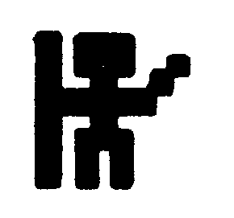
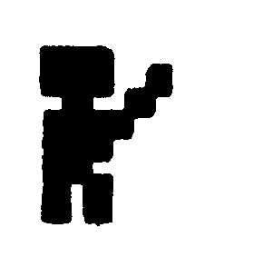
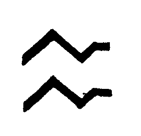
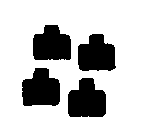
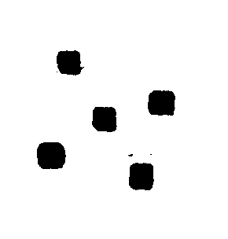
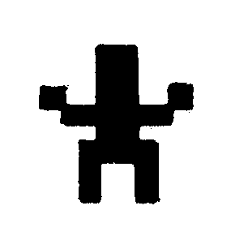
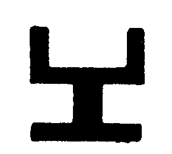

Odyssee — Kampf der Bruderschaft
Eine abenteuerliche Reise durch das Land des bösen Zauberers Saruman.

Bei Odyssee handelt es sich um eine Kombination aus Abenteuer- und Rollenspiel.
Als Auserwählter einer Bruderschaft erhalten Sie den Auftrag, das Land vom Zauberer zu befreien. Sie begeben sich auf die Reise, den Zauberer zu suchen und zu vernichten; dabei werden Sie gefährliche Situationen zu meistern haben, Feinden, aber auch Freunden begegnen.
Vor 20 Jahren hat der mächtige Zauberer Saruman die Herrschaft über das Land Sosaria an sich gerissen. Ihre Bruderschaft ist jedoch nicht länger gewillt, seine Tyrannei noch länger zu erdulden und hat Ihnen den Auftrag gegeben, den Zauberer zu suchen und zu vernichten. Auf Ihrer Reise begegnen Sie vielen Feinden und einigen Ordensbrüdern, aber auch unter diesen gibt es Verräter. Ausgerüstet sind Sie mit 400 Einheiten Kraft, 350 goldenen Münzen und 50 Vorratseinheiten. Sie werden schnell feststellen, daß Sie noch sehr schwach sind, aber es gibt in Dörfern und Städten Kleider, Waffen und Vorräte zu kaufen. Geld bekommen Sie in zahlreichen Kämpfen.
Eingabe und Speicherung
Zuerst muß man den »Creater« eingeben und speichern. Nach dem Starten prüft das Programm, ob alle DATA-Zeilen richtig eingegeben worden sind. Ist dies nicht der Fall, so erscheint eine Fehlermeldung. Stimmen die DATAs, dauert es noch etwa 3,5 Minuten, bis das Programm »World« auf Diskette gespeichert ist. »World« beinhaltet einen neuen Zeichensatz, eine Maschinensprache-Routine zum waagerechten Scrollen des Bildschirms und zirka 16 KByte, die die Landschaft der Odyssee ausmachen.
Die Odyssee ist das Hauptprogramm. Nach Eintippen und Speichern startet man es mit RUN. Zuerst gilt es, sich einen Spieler zu erstellen. Hier kann man 100 Punkte auf Stärke (Strength), Widerstandskraft (Stamina), Intelligenz (Intelligence) und Wissen (Wisdom) verteilen. Die Eingabe der Punkte muß immer zwei Ziffern lang sein. Falls man einmal zuviel Punkte (100) eingegeben hat, werden alle Kriterien wieder auf Null gesetzt, und man beginnt von vorne. Nun entschließt man sich noch zu einem fantasievollen Namen und muß jetzt erst einmal Geduld aufbringen, da man noch ungefähr eine Minute zu warten hat. Diese Wartezeit braucht jedoch nur beim 1. Spiel in Kauf genommen zu werden. Nun erscheint das Titelbild mit dem Hinweis darauf, daß der 2.Teil geladen wird. Ist der Ladevorgang abgeschlossen, kann das Spiel begonnen werden.
Änderungen für Kassette:
- CREATER; Zeile 265 SYS(57812)»WORLD«,1
- ODYSSEE:Die Änderungen stehen im Listing von Zeile 9299—9320
Bewegung der Spielfigur
Die Spielfigur wird ausschließlich über die Tastatur gesteuert. Hier die Belegung der einzelnen Tasten:
@ = Die Spielfigur bewegt sich nach Norden
/ = Die Spielfigur geht nach Süden
; = Die Spielfigur läuft nach Westen
: = Die Spielfigur schreitet nach Osten
A = angreifen (ATTACK)
Im unteren Fenster erscheint ATTACK —. Nun muß man eine Richtungstaste drücken (siehe oben), um dem Computer zu zeigen, in welche Richtung der Befehl zielen soll. Das Programm gibt daraufhin an, ob getroffen worden ist. Dies hängt von der Stärke des Spielers und von seinen Waffen ab. Ist ein Feind besiegt, so erhält man eine Anzahl von Goldstücken und, wenn man Glück hat, einen Matrosenanzug (BLUE TASSLE).
T = verhandeln (TRANSACT)
Nach Eingabe der Richtung, in die verhandelt werden soll, erscheint die Antwort im Textfenster. Falls sich in der angegebenen Richtung niemand aufhält, erscheint die Meldung: »NO RESPONSE«
E = betreten (ENTER)
Mit diesem Befehl kann man in Dörfer und Städte gelangen.
B = Schiff betreten (BOARD SHIP)
Um auf ein Schiff zu gelangen, muß man diesen Befehl benutzen. Man braucht aber einen Matrosenanzug (BLUE TASSLE), damit man von der Besatzung an Bord gelassen wird. Ausnahme ist, wenn man das Schiff in einem Dorf kauft.
X = Das vorher betretene Schiff wird verlassen.
Z = Inventar
Hier wird der Name des Spielers, seine Waffen, seine Kleidung, seine Eigenschaften, seine Kraft und die Sachen (TOOLS), die er bei sich trägt, auf dem Bildschirm angezeigt. Drückt man eine Taste, so dauert es noch einen Moment, bis das Spiel fortgesetzt werden kann.
U =Tür aufschließen (UNLOCK DOOR)
Eine Tür kann geöffnet werden, wenn man den Schlüssel zu ihr besitzt.
G = Zeigt an, wieviel Goldstücke man besitzt.
H = Gibt an, wieviel Kraft (POWER) man noch hat.
F = Zeigt die verbleibenden FOOD-Einheiten.
M = MAGIC MISSILE auslösen
Ein weißes Quadrat läuft über den Bildschirm und tötet alle Feinde und Freunde. Fürjedes Lebewesen erhält man 5 Goldstücke. Man kann es nur einmal benutzen.
R = Neues Spiel (RESTART GAME)
Hiermit kann ein neues Spiel begonnen werden, falls man in einer aussichtslosen Lage ist. Der Computer fragt, ob man sich sicher ist, daß man ein neues Spiel starten möchte. Antwortet man mit »Y«, so kann man sich eine neue Spielfigur erstellen.
Dörfer und Städte
In den Dörfern und Städten des Landes erhält man viele Gegenstände, die zur Lösung der Aufgabe beitragen. In jeder Stadt kann man Waffen und Kleider kaufen. Um seine Vorräte aufzufüllen oder seine Spielsucht zu befriedigen, muß man sich schon in die Dörfer bequemen.
Kauf einer Waffe: Man betritt eine Stadt und geht in den WEAPONSHOP, indem man eine 1 drückt. Aus den vier angebotenen Waffen wählt man sich eine aus, indem man die Ziffer der Waffe drückt. Der Ladeninhaber sagt den Preis, und man kann sich entscheiden, ob man die Waffe kaufen oder lieber seinen Geldbeutel schonen möchte.
Der Kauf eines Kleidungsstücks vollzieht sich genauso, wie der Erwerb einer Waffe.
Kaufen von Nahrung: In einem Dorf betritt man mit 1 den FOODSHOP und erfährt den Preis für 100 FOOD-Einheiten. Der Preisschwanktzwischen 32 und 52 Goldstücken und ist bei jedem Versuch anders. Scheint der Preis annehmbar, so beantwortet man die Frage ob man kaufen möchte mit »Y«, und der Computer zeigt an, wieviel Einheiten FOOD man besitzt.
Hat man einmal nichtgenug Geld, um den geforderten Preis zu bezahlen, erscheint die Fehlermeldung »YOU HAVE NOT ENOUGH MONEY«.
Freunde und Feinde
Zu Ihrem Unglück gibt es viele Ihnen feindlich gesonnene Krieger, die im Dienste des Zauberers stehen, jedoch nur wenige Ordensbrüder, die Ihnen aber wertvolle Dinge geben können. Manche dieser Ordensbrüder stehen Ihnen aber auch mißtrauisch gegenüber, so daß Sie von Ihnen Geheimwörterwissen wollen oder Sie nach Ihrer Intelligenz (INTELLIGENCE) oder nach Ihrem Wissen (WISDOM) beurteilen.
Werden Sie in einen Kampf mit den Feinden verstrickt, so erscheint im Textfenster immer HIT und MISS. HIT bedeutet, daß der Gegner Sie getroffen hat; MISS, daß er verfehlt hat. Wie oft Sie getroffen werden, hängt von der Dauer des Kampfes, IhrerWiderstandsfähigkeit (STAMINA) und Ihrer Kleidung ab.
Sie haben das Spiel verloren, wenn Sie keine Nahrung (FOOD) oder keine Kraft (POWER) mehr haben. FOOD verlieren Sie, wenn Sie durch das Land gehen (pro Schritt 0,2 Einheiten). Kraft verlieren Sie in den Kämpfen, wenn Sie getroffen werden.
Hilfsmittel
Die Hilfsmittel braucht man, um die gestellte Aufgabe zu lösen. Man erhält sie in Kämpfen, Dörfern und Städten und von den Ordensbrüdern. Wenn man »Z« drückt, werden sie unter TOOLS aufgelistet.
BLUE TASSLE: Matrosenanzug
Hat man keinen Matrosenanzug, läßt einen die Besatzung eines Schiffes nicht an Bord. Es erscheint die Meldung »THE CREW DOES NOT ALLOW THIS«.
MAGIC MISSILE: magische Waffe
Mit ihr vernichtet man alle Feinde, leider aber auch alle Freunde, die auf dem Bildschirm zu sehen sind. Für jeden Freund oder Feind erhält man durch diese Tötungsaktion 5 Goldstücke. Man kann sie also dazu benutzen, sich Geld zu verschaffen odereine ÜbermaChtvon Feindenzuvernichten.
KEY: Schlüssel
Braucht man um Türen zu öffnen.
GOLDEN KEY: goldener Schlüssel
Erklärt sich im Spielverlauf
SWIM-WEST: Schwimmweste
Hat man die Schwimmweste, kann man 12 Felder weit schwimmen. Danach löst sie sich in Luft auf.
BOOTS: Schuhe
Trägt man Schuhe, so kann man 2 Felder über felsigen Grund laufen. Danach sind sie verschlissen.
MARK OF FIRE:
Mit MARK OF FIRE kann man durch LAVA gehen.
Verschiedenes
Wie Sie vielleicht bemerkt haben, habe ich drei Einzeiler aus der Ausgabe 11/84 des 64’er Magazins in mein Programm übernommen. Im »Creater« istes die SAVE-Routine für Maschinenspracheprogramme und in der »Odyssee« der Einzeiler zum Kopieren des Basic ins RAM. Der Einzeiler, der die »Odyssee« überhaupt erst ermöglicht hat, ist der zum Feststellen eines Bildschirmbereiches von Peter Eckart.
(Jan Geißelmann/rg)Erläuterung der Grafik
Ohne Hilfsmittel können Sie sich nur auf Gras fortbewegen. Bis auf Steinmauern können alle anderen Hindernisse überwunden werden. Energiemauern nehmen Ihnen 100 POWER-Einheiten ab.
| Normales Zeichen | ||
|---|---|---|
|  | Spielfigur | ! |
| Der Ordensbruder | " | |
|  | Der Feind | # |
| Eine Stadt | $ | |
|  | Wasser | % |
| Ein Schiff | & | |
|  | Ein Dorf | / |
|  | Gras | ( |
| Fels | ) | |
| Lava | + | |
| Energiemauer | * | |
|  | Zauber Saruman | ↑ |
| Der dunkle Turm | ← | |
|  | Mauerstein | ] |
| Schloß eines Lords | ' | |
| Tür |
| Variablen | ||
| K | Variable für Kleidung | |
| W | Variable für Waffe | |
| W$ | augenblickliche Waffe | |
| AR$ | augenblickliches Kleidungsstück | |
| G | Gold | |
| H | Kraft | |
| Y | Y-Koordinate Bildschirm | |
| T | X-Koordinate Landschaft | |
| V | Vergleichsvariable | |
| I,X,Z | Laufvariablen | |
| p | Bildschirmposition Spielfigur | |
| s | Bildschirmposition bei Richtungsangabe | |
| Y1 | Y-Koordinate bei Richtungsangabe | |
| V1 | Zeichen unter Spielfigur | |
| V2 | letztes Zeichen unter Spielfigur | |
| G(4) | Kraft der Feinde | |
| S%(64) | Sprungadressen der Befehle | |
| V$(1,4) | Sachen in Dörfern und Städten | |
| W$(2,4) | Waffen und Kleidungsstücke | |
| W(2,4) | Preis für Waffen und Kleidungsstücke | |
| Speicherbelegung | ||
| 048—12287 | Basic-Programm | |
| 12288—16383 | Zeichensatz | |
| 16384—16695 | Maschinensprache | |
| 16862—33001 | Landschaft | |
| 10 - 25 | Variablen definieren |
| 33 — 90 | Bildschirmaufbau |
| 100 | reagieren auf Tastendruck |
| 110 — 170 | Angriff der Feinde |
| 180 | Spielfigur tot |
| 210 — 230 | Routine für Bewegung |
| 1000 — 1080 | Befehl ATTACK |
| 1200 — 1290 | Inventar |
| 1400 — 1499 | Befehl ENTER |
| 1700 - 1720 | Neues Spiel |
| 2100 | Anzeige von FOOD |
| 2200 — 2297 | Befehle TRANSACT |
| 2300 - 2360 | Befehl EXIT |
| 2600 | Anzeige von GOLD |
| 2800 - 2870 | Befehl BOARD SHIP |
| 2900 | Anzeige von POWER |
| 3000 — 3020 | Befehl UNLOCK DOOR |
| 3600 — 3650 | Befehl MAGIC MISSILE |
| 4500 — 4540 | Befehl WEST |
| 4600 — 4610 | Befehl NORTH |
| 5000 — 5020 | Befehl EAST |
| 5500 — 5510 | Befehl SOUTH |
| 9000 - 9197 | Spielfigur erstellen |
| 9200 — 9300 | Ladebild und Laden von Teil 2 |
| 15000— 15540 | in Stadt oder Dorf |
| 16000— 16050 | im Schloß eines Lords |
| 18000— 18040 | Spiel gewonnen |
| 60000- 60020 | DATAs |